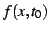
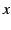
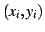
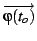
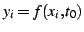
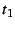
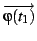
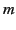
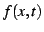

2 Automatic generation of gait control tables
Control tables are generated using a wave propagation model. The algorithm
is as follows (figure ![[*]](crossref.png) ). Having a waveform in its
initial state,
). Having a waveform in its
initial state, 
(in the figure, sinusoidal waves are
drawn, but other waveforms could be used) and a worm with all its
articulations over the 
axis (figure -1). Let

be the coordinates of the articulation , at some
instant . The angular position vector for the initial time,

,
is calculated fitting the articulations to the wave, so that

for all i. The distance L between articulations is maintained. It
could be said that ``the worm fits the wave'' (figure -2).
Next, the wave is shifted (instant 
. Figure -3)
and the worm fits the wave again, obtaining

(figure -4). Points 3 and 4 are repeated until the
wave reach its initial phase. After 
instant of time, all the
vector that comprises the table are generated.
Figure:
The algorithm used to generate the control tables
|
|
By means of this algorithm, control tables are obtained, regardless
of the waveform used, 
. In the locomotion test, sinusoidal
and semi-sinusoidal waves (just the positive part of the sinusoidal
wave) have been used.
Juan Gonzalez
2004-10-08